那遠方來的水手：從〈三三〉看沈從文小説故事性的呈現形式及效果
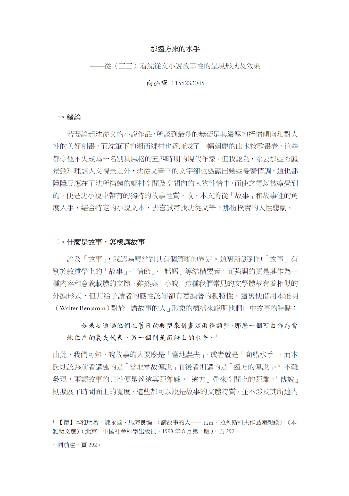

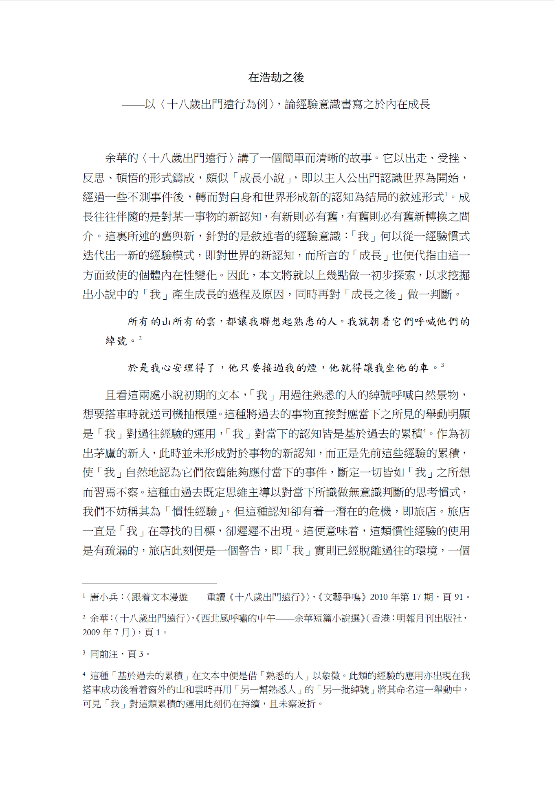
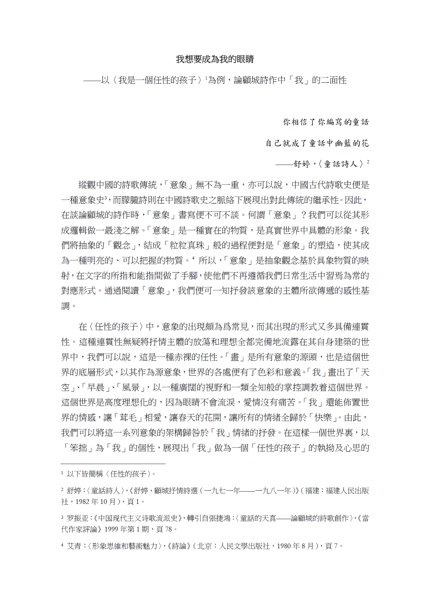
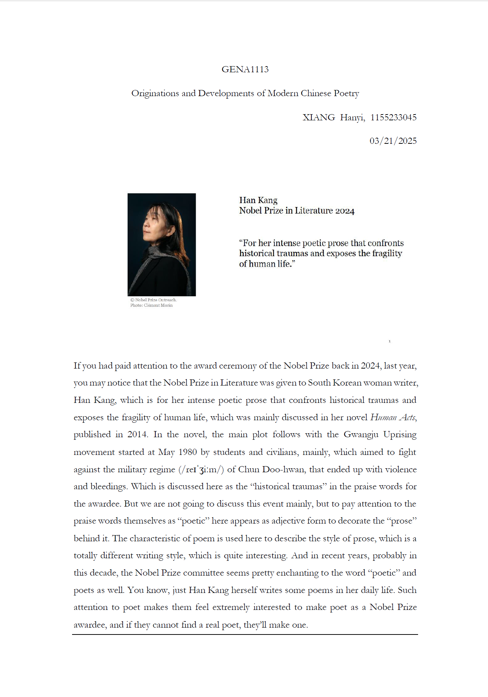
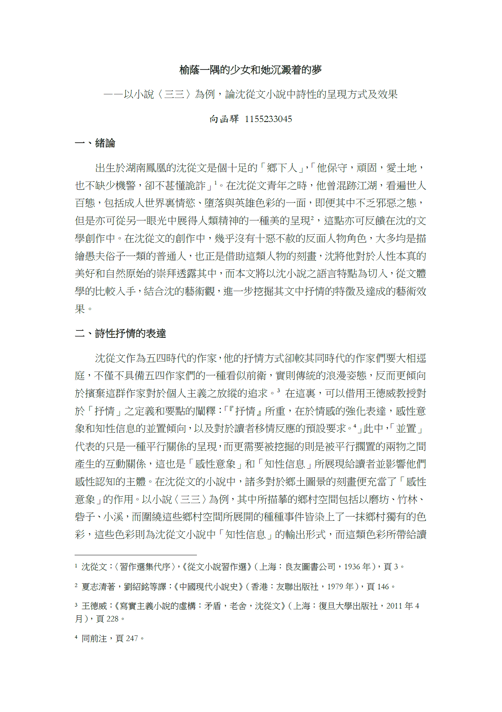
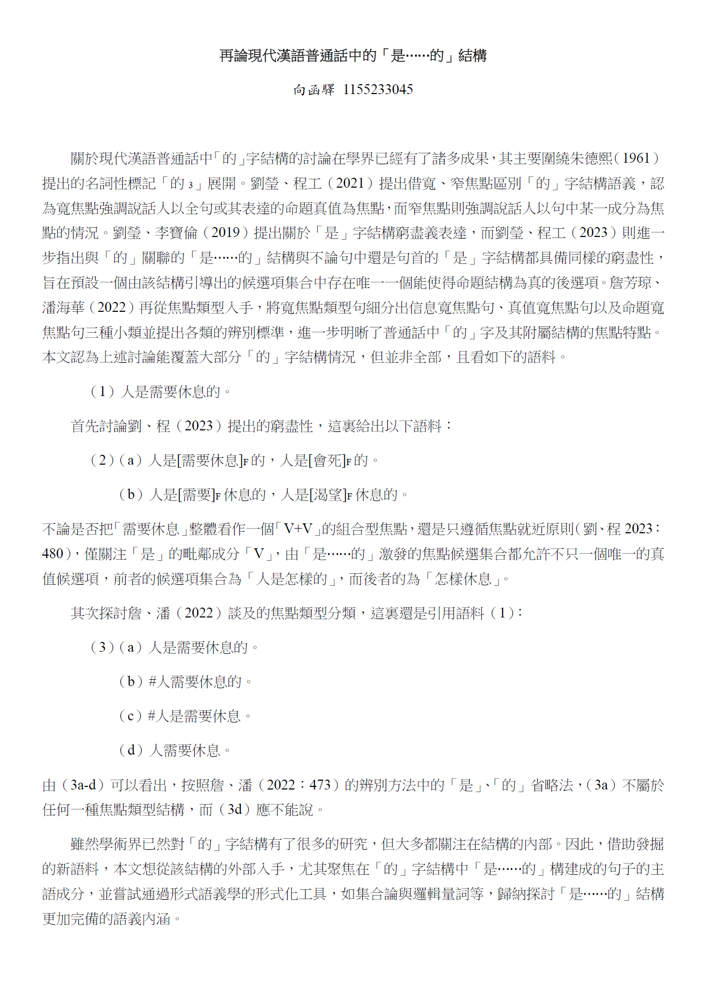
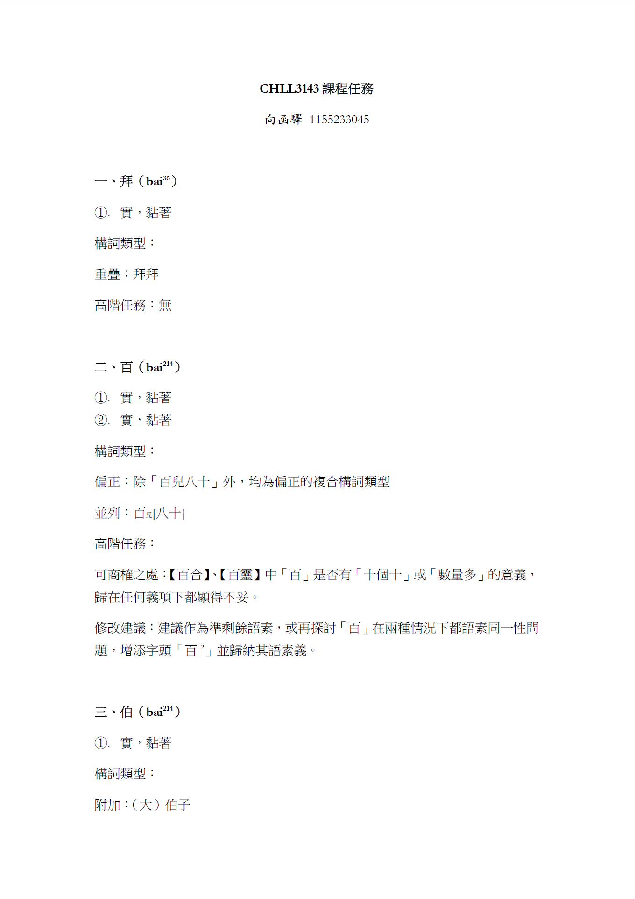
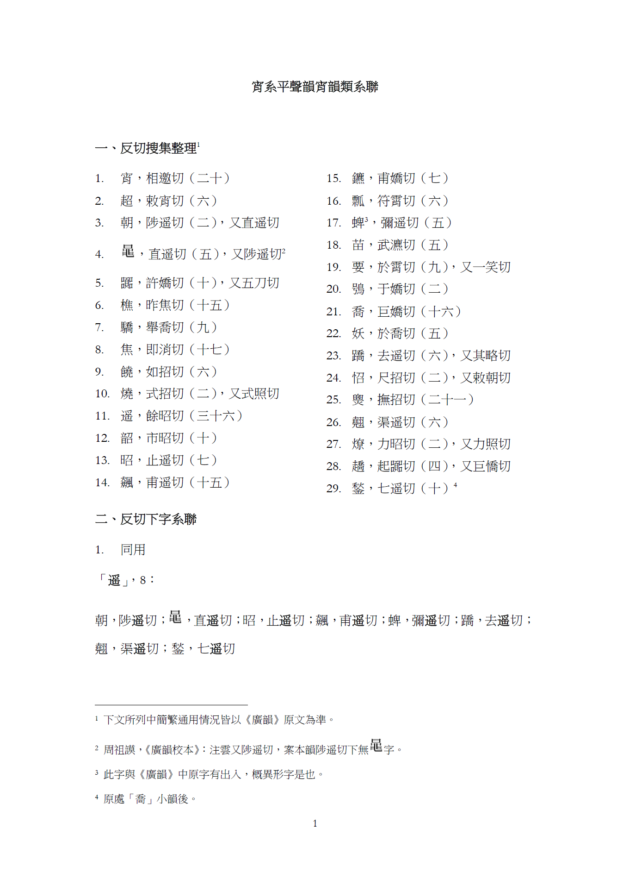
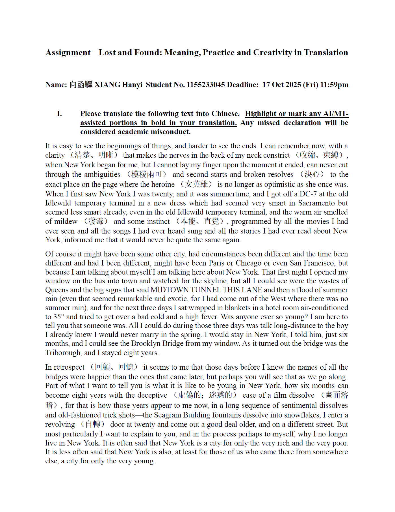
Case studies in microeconomics, macroeconomics, and the global economy.
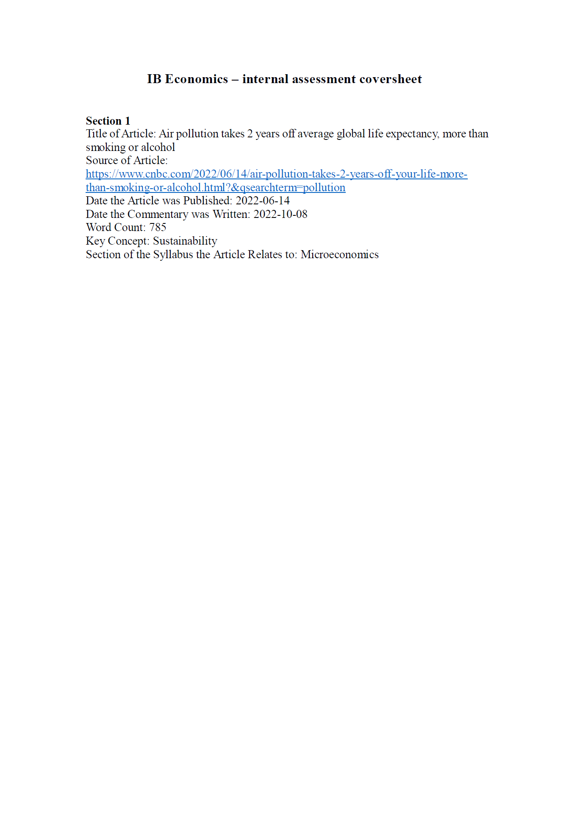
Investigation of oscillation of a spring pendulum.
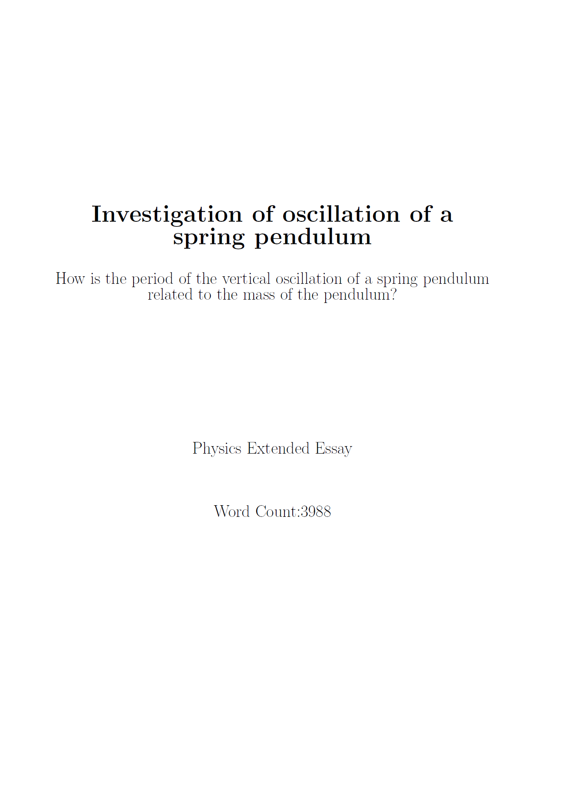
Application of calculus and trigonometry in designing the winding mountain road.
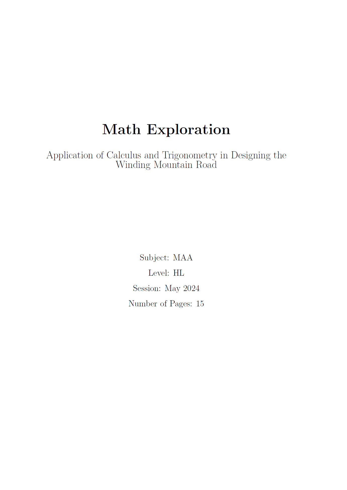
The theoretical research of the rate of chemical reactions.
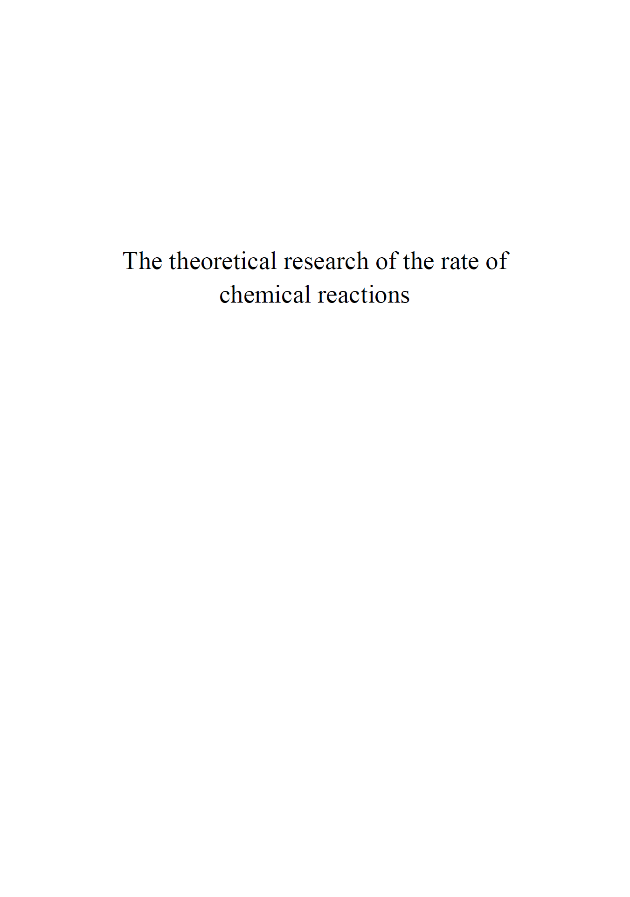
Are we too quick to assume that the most recent evidence is inevitably the strongest?
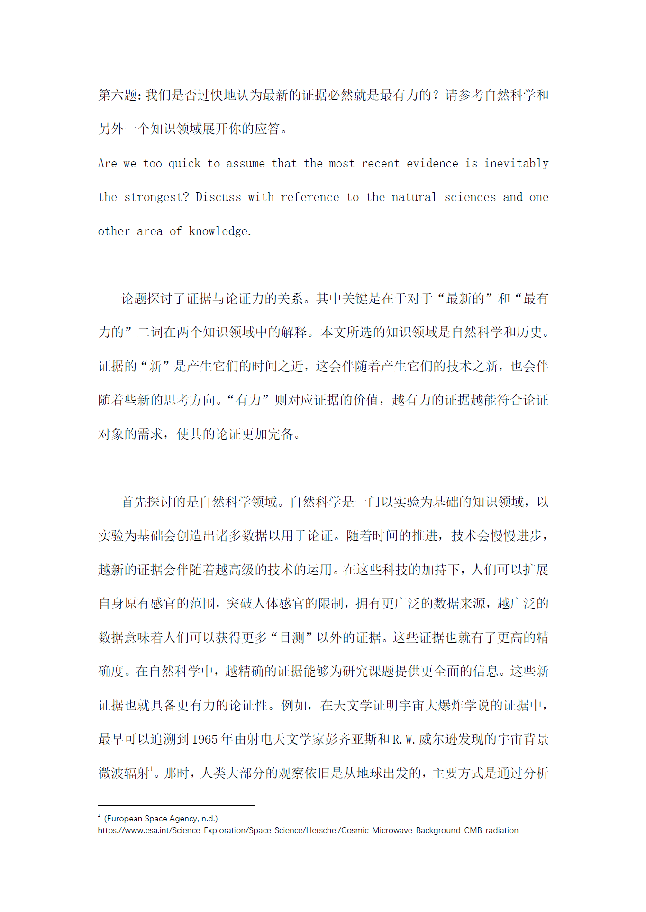
Email
1155233045@link.cuhk.edu.hk
xhy_2006@outlook.com
Affiliation
The Chinese University of Hong Kong
Shatin, New Territories, Hong Kong (SAR)
Loading document…